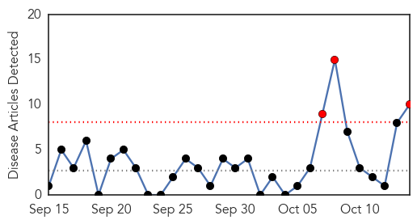
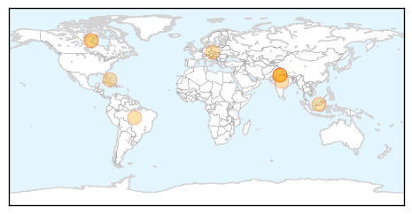
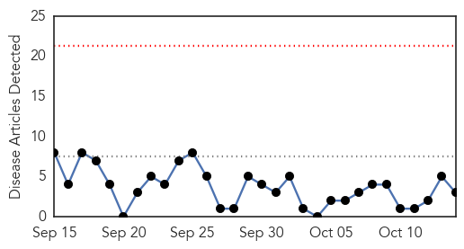
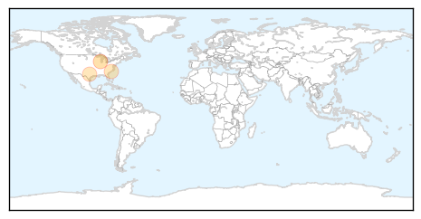

Swine Flu
30-Day Web Trend
3 alerts, 0 warnings

30-Day Twitter Trend
0 alerts, 0 warnings

Article Locations
Article Confidences

Top Articles:
- 0.999
- After dengue menace, Delhi prepares to tackle swine flu
- 0.997
- Calling Big Pharma’s Bluff – Swine Flu Misfires in the UK
- 0.994
- Vaccine Injuries to Spike During Aggressive Flu Season Push
- 0.993
- Faridabad woman succumbs to swine flu
- 0.992
- Faridabad woman dies at Safdarjung Hospital
- 0.992
- One more succumbs to swine flu in Delhi
- 0.982
- Hilarity Breaks out in UK Over Government Plans for Mass Burial for Swine Flu Victims
- 0.977
- Nassau County's source for local news, breaking news, sports, entertainment & shopping
- 0.967
- Tiruchi man diagnosed with H1N1
- 0.785
- France 24 Airs Interview with Dr. Marc Girard on Cancellation of 50 Million H1N1 Vaccine Doses
Top Tweets:
- 0.542
- Swine flu vaccine doses ordered http://t.co/dTggLX1WrD http://t.co/EYOEezMVhT
West Nile Virus
30-Day Web Trend
0 alerts, 0 warnings

30-Day Twitter Trend
0 alerts, 0 warnings

Article Locations
Article Confidences

Top Articles:
Top Tweets:
-
No tweets found for Oct 14, 2015